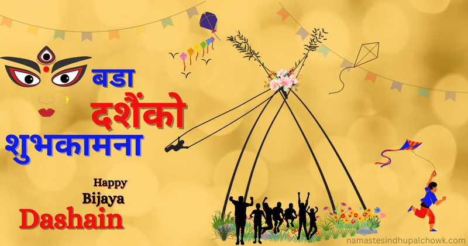

PNG Format Example

About This Image
This is a Happy Bijaya Dashain greeting graphic on a yellow background. It has a bamboo swing, kites, flags and people jumping. The Nepali words say best wishes for Bada Dashain.
I picked this one because it puts a lot of Dashain things in one picture, like the swing and the kites.
Why PNG Format?
I used PNG because this is a graphic and not a photo. It has text, flat colors and sharp edges, and PNG keeps all of that clean without getting blurry.
If this was a JPG, the Nepali letters could look a little fuzzy around the edges. PNG keeps them sharp.
Image source: Namaste Sindhupalchowk